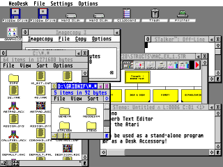

NeoDesk 4
Sun, Jan 21, 2018Current version: Download NeoDesk 4.06
NeoDesk 4, the revolutionary replacement for the built-in Atari desktop, is now freeware.
NeoDesk 4 adds hundreds of new features and enhancements over the original desktop, while remaining fully compatible with your other software applications.

NeoDesk 4 is ideal for machines running a multitasking system (such as Geneva or MultiTOS) it also incorporates many of the features found in Geneva on singletasking systems, including 3D buttons, window gadgets, and popup menus.
Right: Geneva running NeoDesk4, Imagecopy 3.5, STalker, STeno, and Thought! concurrently.
Features
Here are just a few of the many features in NeoDesk 4:
- Place commonly used files, programs, and folders directly on the desktop.
- Built-in icon Editor lets you import, design, and assign different multicoloured icons to your favourite files, programs, and folders. Icons can change appearance when selected.
- You can write Desktop Notes directly on the desktop (you select colour and font).
- Place or tile any image directly on the desktop.
- Use the Split Windows to view two different parts of the same window at once.
- All dialogs can be shown in windows. This allows you to have a dialog open and still access other windows.
- Unique File Clipboard holds files in memory. Like an automatically expanding and shrinking ramdisk, which is always available.
- An advanced Filter lets you specify which files are selected, copied, or viewed by means of multiple file templates (*.ACC, *.PRG, etc.), file size (<,>, etc.), date, time, or file attributes.
- All file operations (including disk formatting) can occur in the background, freeing up the computer for other tasks.
- When copying files, NeoDesk reads as many files as will fit into memory at once and then writes them out. No more useless disk swaps.
- Groups let you bring together related icons for easy access. For example, you might have one group called “Graphics” and another called “Word Processing”.
- Items in groups can have names up to 20 characters and can be placed anywhere in the window.
- Each window contains its own menu bar with options that are specific to that window. You can also drag items to a parent directory icon, an information icon, or a trash can icon.
- With the touch of a button, you can select all the files in a window, including those not visible in the window.
- Icons can be selected from the keyboard. This includes a special “quick search” mode which allows you to type the first few letters of a file name; as you type each letter, the first file or folder whose name matches is selected.
- The entire desktop can be displayed in a window (especially useful when running in a multitasking system).
- NeoDesk 4 can also run as a desk accessory (with its desktop in a window).
- The colour, patterns, text colour, and fonts of all windows and icons can be easily changed.
- A special Reorder mode lets you change the physical order of the files in any directory, including the AUTO folder.
- Powerful Macros let you automate any series of desktop operations, such as file copying, opening windows, running programs, etc.
- Supports all screen resolutions, including custom, virtual, and Falcon resolutions.
- Powerful search function lets you quickly find any item you are searching for.
- On limited memory singletasking systems, NeoDesk can automatically remove itself from memory when you run a program.
Now Included:
NeoDesk CLI
The NeoDesk CLI is a complete Command Line Interface (CLI) for the NeoDesk desktop and runs as either a desk accessory or stand alone program, within its own GEM Window.
Both MS-DOS and UNIX style commands let you perform file operations directly from the keyboard. These commands can also be combined to create powerful batch files, which let you automate complex operations. Through NeoDesk, these batch files can be easily executed by just double-clicking on their icon or dropping them on the CLI icon.
Special functions let you configure and review a complete history buffer of all output and of the commands you’ve entered.
The NeoDesk CLI can also run TOS programs within its GEM window. This makes a cleaner display, and you can change the font size used by that TOS program. You can even use the CLI as a VT-52 terminal!
Special commands let you control the size and location of the CLI window, set and remove environmental variables, use parameter passing, and even create menus within your batch files.
NeoDesk Icon Disk
Here’s a collection of over 500 icons separated into categories for easy viewing. There are multicoloured and monochrome appearances, and many icons have different selected states.